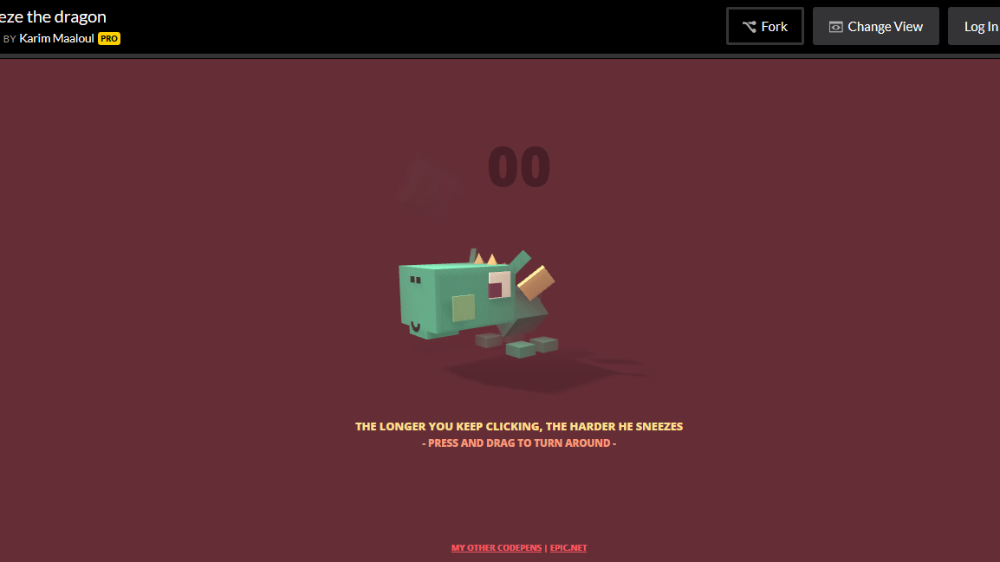
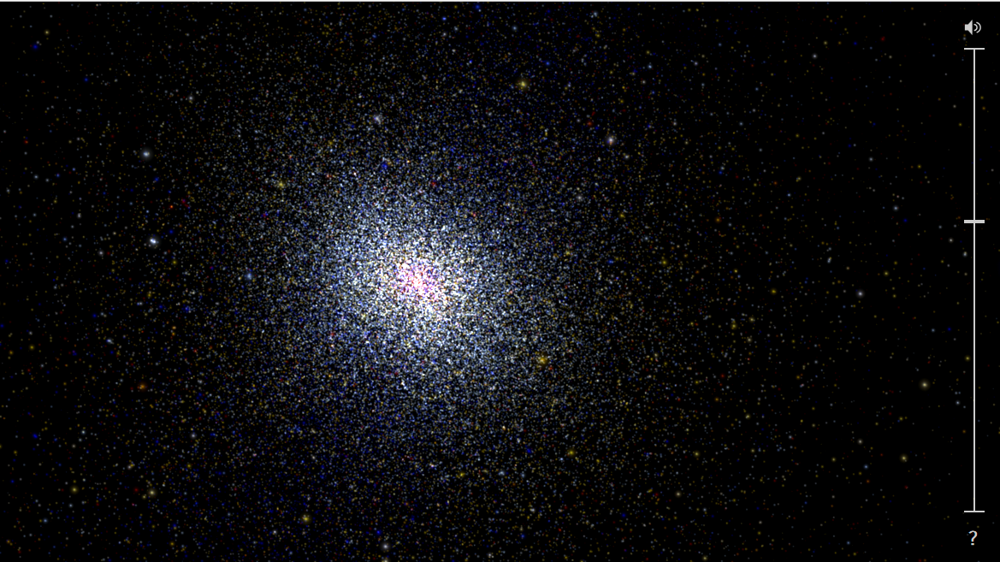

Sneeze the Dragon is an interactive game. The number of times you click the harder the dragon sneezes. You can also click and drag to turn the dragon around.
This website allows the user to click and drag to explore a starry sky. You can zoom in and out to see a planet or the galaxy. It is simple and intuitive to use.
